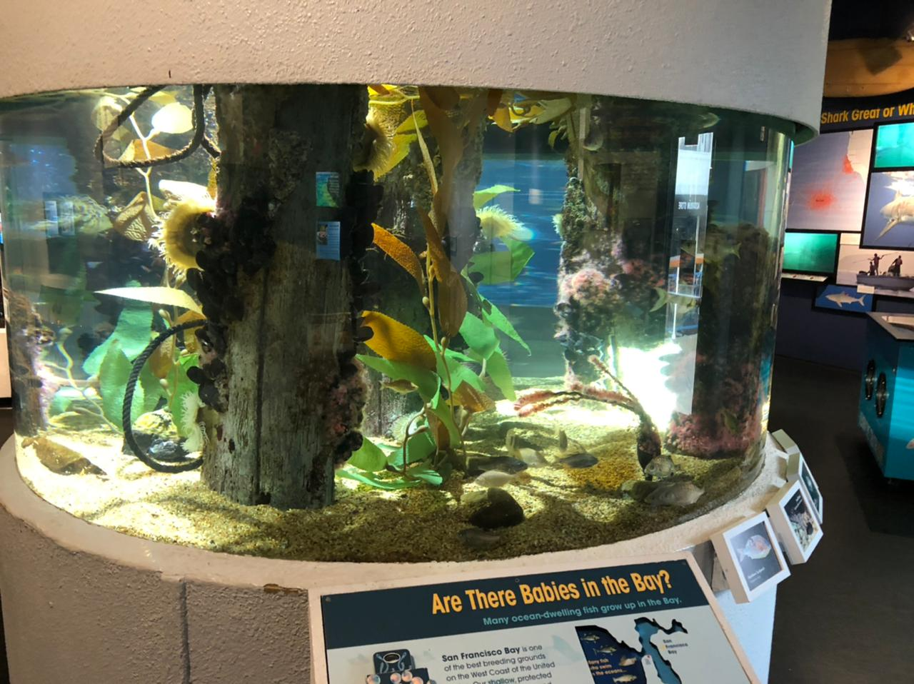
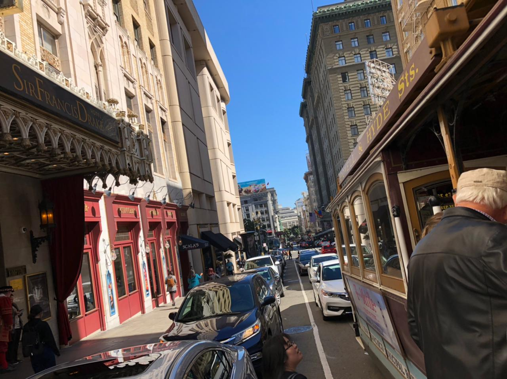

Estando en SF
Que hice en San francisco?
Acuario
Conoci el acuario de san francisco donde tenian una cantidad inmensa de peces y animales marino, tambien tenian una seccion subterranea donde los peces pasaban por encima
Bus
Dimos vueltas por la ciudad de SF en los entrenes que estan por la ciudad